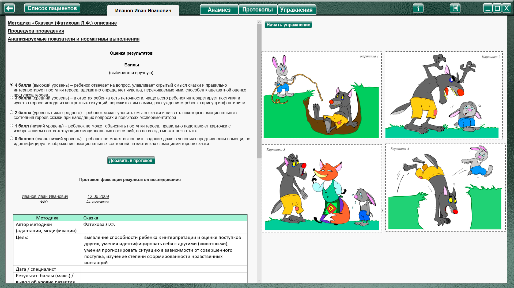
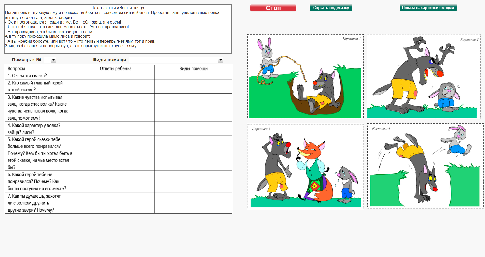
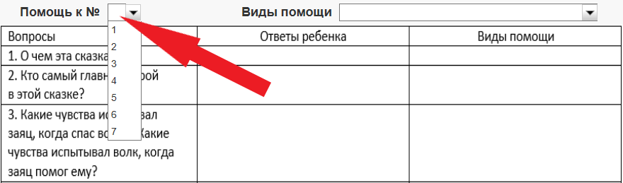
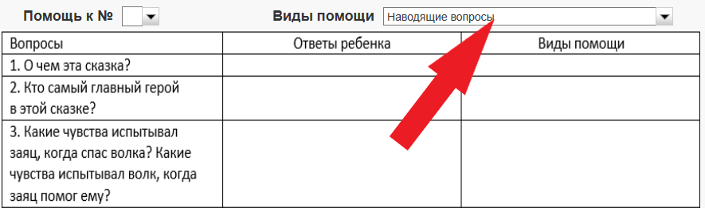

Методика «Сказка» (Фатихова Л.Ф.)
Методика «Сказка» (Фатихова Л.Ф.) описание
Процедура проведения.
Ребенку предъявляется картинка с изображением сюжета какой-либо сказки (например, «Волк и заяц») и читается отрывок из текста сказки или полный текст сказки (в зависимости от длины сказки,
уровня ее сложности). Затем идет беседа по прослушанной сказке, при этом картинка находится в поле зрения ребенка.
Текст сказки «Волк и заяц»
Попал волк в глубокую яму и не может выбраться, совсем из сил выбился. Пробегал заяц, увидел в яме волка, вытянул его оттуда, а волк говорит:
- Ох и проголодался я, сидя в яме. Вот тебя, заяц, я и съем!
- Я же тебя спас, а ты хочешь меня съесть. Это несправедливо!
- Несправедливо, чтобы волки зайцев не ели.
А в ту пору проходила мимо лиса и говорит:
- А вы жребий бросьте, или вот что – кто первый перепрыгнет яму, тот и прав.
Заяц разбежался и перепрыгнул, а волк прыгнул и плюхнулся в яму.
Вопросы:
1. О чем эта сказка?
2. Кто самый главный герой в этой сказке?
3. Какие чувства испытывал заяц, когда совершал свой поступок? Какие чувства испытывал волк? А лиса?
4. Какой герой сказки тебе больше всего понравился? Почему? Кем бы ты хотел быть в этой сказке: волком, лисой или зайцем?
5. Какой герой тебе не понравился? Почему? Как бы ты поступил на его месте?
6. Как ты думаешь, к чему может привести такое поведение волка?
Анализируемые показатели и нормативы выполнения
Виды помощи
1. Если ребенок не может ответить на вопросы методики, ему задаются наводящие вопросы.
2. Если ребенок затрудняется в вербализации своих представлений о поступках и чувствах героев, ему предъявляются карточки с изображением лиц, выражающих те или иные эмоции, и предлагается указать на карточку с изображением той эмоции, которую, по его мнению, испытывает тот или иной герой сказки.
3. Если ребенок затрудняется в воспроизведении сюжета сказки, экспериментатор напоминает сюжет, указывает на соответствующие сюжетные картинки, после чего снова задает вопросы по содержанию сказки.
Оценка результатов
4 балла (высокий уровень) – ребенок отвечает на вопрос, улавливает скрытый смысл сказки и правильно интерпретирует поступки героев, адекватно определяет чувства, переживаемые ими,
способен к адекватной оценке поступков героев.
3 балла (средний уровень) – в ответах ребенка есть неточности, чаще всего ребенок интерпретирует поступки и чувства героев исходя из конкретных ситуаций, пережитых им самим, рассуждениям ребенка присущ инфантилизм.
2 балла (уровень ниже среднего) – ребенок может уловить смысл сказки и назвать некоторые эмоциональные состояния героев сказки при наводящих вопросах и подсказах экспериментатора.
1 балл (низкий уровень) – ребенок не может объяснить поступки героев, правильно подставляет карточки с изображением соответствующих эмоциональных состояний, но не всегда может назвать их.
0 баллов (очень низкий уровень) – ребенок не может выполнить задание даже в условиях предъявления помощи, не идентифицирует изображения эмоциональных состояний на картинках с эмоциями героев сказки.
Анализ результатов
Группы детей |
Возраст |
Баллы |
Нормально развивающиеся дети. |
Дошкольный |
1-4 |
Младший школьный |
2-4 |
|
Дети с задержкой психического развития. |
Дошкольный |
1-3 |
Младший школьный |
2-3 |
|
Дети с умственной отсталостью. |
Дошкольный |
0-1 |
Младший школьный |
1-3 |
Нормально развивающиеся дети как в дошкольном, так и в младшем школьном возрасте, понимают смысл сказки, могут ее пересказать. В качестве главного героя они выбирают волка, реже
зайца. Дети определяют эмоциональные состояния героев сказки самостоятельно или с помощью карточек, правильно оценивают поступки героев, их роль в событиях; способны к идентификации с
героями сказки, склонны идентифицировать себя с положительными героями сказки (лисой и зайцем). В рассуждениях дошкольников может быть инфантилизм, склонность интерпретировать поведение героев исходя из собственного опыта. Младшим школьникам, как правило, такой инфантилизм несвойственен, они способны прогнозировать последствия поведения героев.
Дети с ЗПР дошкольного возраста в целом понимают смысл сказки, называют главным героем зайца или волка, иногда затрудняются в определении главного героя, называя всех трех персонажей. Дети испытывают трудности в определении эмоциональных состояний персонажей сказки, чаще определяя черты характера или поведения, при этом оценка эта достаточно примитивная («хороший», «плохой»). Они могут определять переживания героев при наводящих вопросах (первый вид помощи) и предъявлении портретных картинок (второй вид помощи), но оценка
является не очень точной (волк «злой», заяц «добрый», «веселый»). Дети адекватно оценивают героев сказки, порицая поведение волка и одобряя поступок зайца. Большинство дошкольников при
идентификации себя с волком отвечают, что они бы не стали есть зайца на месте волка. Они способны спрогнозировать отрицательное отношение к герою в связи с его поведением. Так дети говорят, что с волком дружить не будут, «потому что он злой (сердитый, нехороший)».
Младшие школьники с ЗПР могут пересказать сказку самостоятельно (пересказ носит чаще бессистемный характер) или составляется по опорным вопросам. В отличие от дошкольников они
могут определить эмоциональные состояния и характер персонажей сказки (заяц испытывает страх, волк – злость), хотя неточность в оценке как эмоциональных состояний, так и характера героев сказки остается. При прогнозировании отношения к волку других животных младшие школьники способны не только определять отрицательный характер этого отношения, но и выделять его причины. И дошкольники, и младшие школьники предпочитают быть зайцем, объясняя свой выбор тем, что зайчик добрый.
Дети с умственной отсталостью в дошкольный период не понимают смысл сказки, на вопрос «О чем эта сказка?» называют отдельных героев или действия типа: «спрыгнул в яму», «съем»,
«прыг», «заяц плачет». Дошкольники не способны определить эмоциональные состояния героев сказки даже в условиях предъявления помощи. В оценке поступков и поведения героев дети
пользуются понятиями «хороший» и «плохой», не способны к прогнозированию отношения к героям сказки. Дошкольники данной группы не склонны выражать отношение к героям и идентифицировать себя с ними, часто не понимают вопросов: «Какой герой сказки тебе понравился (не нравился)? Почему?», «Кем бы ты хотел быть?», «Как бы ты поступил на его месте?».
Младшие школьники с умственной отсталостью так же, как и дошкольники, затрудняются в понимании смысла сказки, пересказывают фрагменты сказки. В качестве главного героя определяют зайца. Способны к называнию некоторых эмоциональных состояний и экспрессивных характеристик («испугался» «испытывал страх», «плачет»), к нравственной оценке поступков героев: одобряют
поступок зайца и порицают поведение волка, предлагая нравственно правильное поведение. Однако дети данной группы при нравственной оценке героев сказки, как правило, руководствуются своим опытом, а не содержанием сказки. Так, лиса оценивается детьми как «хитрая» и «плохая», тогда как в данной сказке она играет конструктивную роль. Даже в школьном возрасте дети с умственной отсталостью не способны спрогнозировать последствия поведения героев.
Оценка результатов
Баллы
(выбирается вручную)
способен к адекватной оценке поступков героев.
Протокол фиксации результатов исследования
_________________________________ _______________
ФИО Дата рождения
Методика |
Сказка |
||
Автор методики (адаптации, модификации) |
Фатихова Л.Ф. |
||
Цель: |
выявление способности ребенка к интерпретации и оценке поступков других, умения идентифицировать себя с другими (животными), умения прогнозировать ситуацию в зависимости от совершенного поступка, изучение степени сформированности нравственных инстанций |
||
Дата / специалист |
|||
Результат: баллы (макс.) / вывод об уровне развития |
|||
Примечание |
|||
Процесс выполнения диагностического задания |
|||
Вопросы |
Ответы ребенка |
Виды помощи |
|
1. О чем эта сказка? |
|||
2. Кто самый главный герой в этой сказке? |
|||
3. Какие чувства испытывал заяц, когда спас волка? Какие чувства испытывал волк, когда заяц помог ему? |
|||
4. Какой характер у волка? зайца? лисы? |
|||
5. Какой герой сказки тебе больше всего понравился? Почему? Кем бы ты хотел быть в этой сказке, на чье место встал бы? |
|||
6. Какой герой тебе не понравился? Почему? Как бы ты поступил на его месте? |
|||
7. Как ты думаешь, захотят ли с волком дружить другие звери? Почему? |
|||
Баллы |
|||
Логика заполнения протокола
Заполняется автоматически
Имя специалиста – логин при входе в программу.
Дата –дата и время прохождения упражнения в формате дд.мм.гггг.
Результат: баллы (макс.) / итоговая сумма балов за все задания (Макс. 4 балла).
Баллы - количество баллов проставляется в зависимости от выбора в поле «Оценка результатов» в разделе «Баллы» В протокол заносится только кол-во баллов (без пояснительного текста).
Ответы ребенка и Виды помощи – заполняются специалистом в процессе проведения упражнения.
Остальные ячейки заполняются специалистом самостоятельно.
Элементы управления настройкой и выполнением упражнения.
- кнопка для показа сюжетных картинок.
- кнопка для показа картинок с эмоциями.
- скрывает подсказки (сюжетные картинки и картинки с эмоциями).
Выполнение упражнения.

Нажать кнопку «Начать упражнение», закрывая область оценки результата, и открывая упражнение на весь экран.

Выполнить задание согласно пункту «Процедура проведения». Прочитать сказку. Задавая вопросы фиксировать ответы ребенка и оказываемую помощь в таблице слева. При заполнении ячейки помощи, специалист может заполнить эти ячейки самостоятельно, вписывая текст так же, как и в ячейки с ответами ребенка, или нажать выпадающее меню «Помощь к №» и выбрать номер вопроса, к которому будет добавлен вид помощи

Затем открыть выпадающее меню «Виды помощи» и выбрать вид помощи. При нажатии на нужный пункт, он автоматически добавиться в колонку «Виды помощи», к вопросу, номер которого был выбран в 1 меню.

При необходимости воспользоваться демонстрацией картинок с эмоциями - нажать кнопку «Показать картинки эмоции». По окончании упражнения нажать кнопку «Стоп», открывая область оценки результата. Выбрать количество баллов и нажать кнопку «Добавить в протокол». Произвести оценку результата (заполнить оставшиеся ячейки протокола) согласно пункту «Анализируемые показатели и нормативы выполнения».